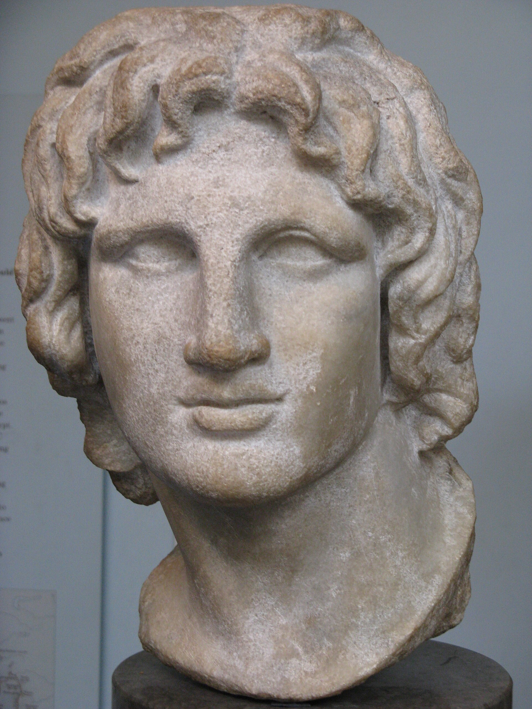
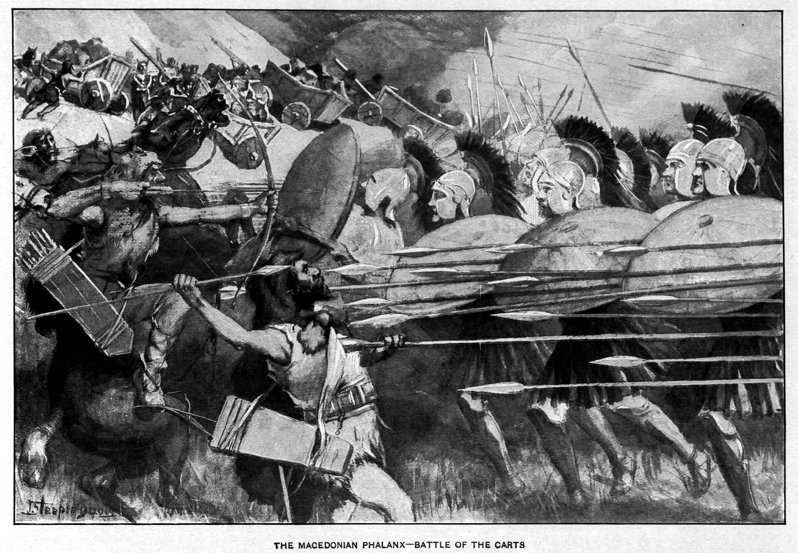
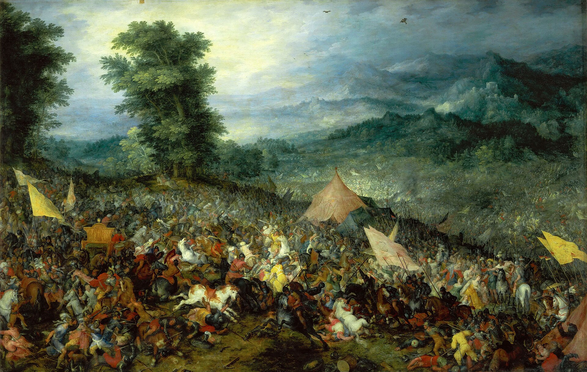
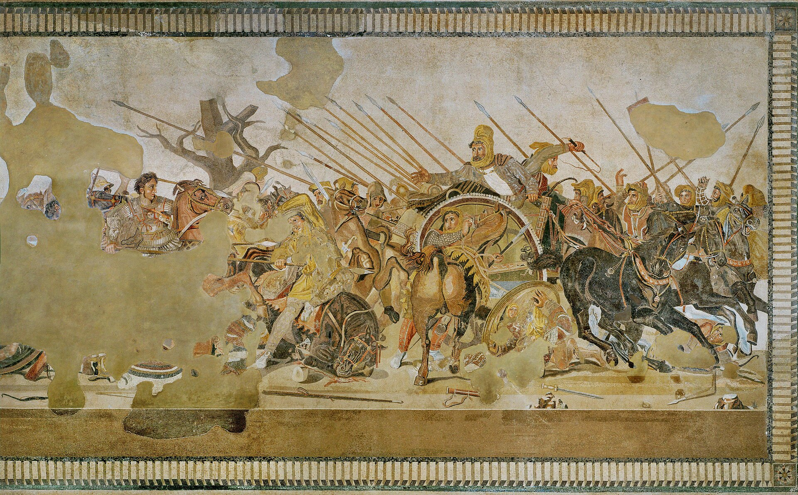

Alexander III of Macedon crossed into Asia in 334 BC with an army of around forty thousand, and over the next eleven years he destroyed the largest empire the world had ever seen, fought his way through Persia, Egypt, Central Asia, and into India, and never lost a pitched battle. It is tempting to explain this by sheer force of personality, and the personality was real. But Alexander won because he commanded the most advanced military system of its age, a system his father Philip II had spent twenty years engineering, and because he used it with a combination of discipline and daring that his enemies, for all their numbers, could never answer. What follows is how that machine actually worked: the weapons, the formations, the doctrine, the sieges, the supply, and the man at the point of the wedge.

The single most important fact about Alexander's army is that he did not build it. His father, Philip II of Macedon, did. When Philip took the throne in 359 BC, Macedon was a backward kingdom on the edge of the Greek world with a militia that lost to its neighbors. Philip rebuilt it into the first truly professional standing army in Europe: full-time, paid, drilled year-round, and loyal to the crown rather than to city or clan. He rearmed the infantry with a fearsome new pike, reorganized them into a deep pike phalanx, forged the Macedonian nobility into a shock cavalry arm, added engineers and siege trains and light troops, and welded the whole thing into a combined-arms force in which each part covered the weakness of the others. By the time Philip was murdered in 336 BC, he had already conquered Greece. Alexander, at twenty, inherited a finished instrument and a corps of veteran officers who had spent their careers making it work. His genius was in the using, not the building, a distinction worth keeping in view.
The backbone of the army was the Macedonian phalanx, and its defining weapon was the sarissa, a pike of cornel wood roughly four to six meters long, far longer than the spear of a Greek hoplite. Held in both hands, the sarissas of the first several ranks all projected ahead of the front line at once, so that an enemy charging the phalanx met a hedge of five layers of iron points before he could reach a single Macedonian. The pikemen fought in deep blocks, typically sixteen ranks deep, drilled to advance, wheel, and hold formation on command. On open, level ground a phalanx in good order was effectively unbreakable from the front; nothing in the ancient world could push through that thicket of points. Its purpose in Alexander's system was precisely that: to be the anvil. The phalanx advanced, fixed the enemy's main body in place, and held it, pinning it down and absorbing its attention while the decisive blow was prepared elsewhere. The phalanx rarely won the battle by itself. It made the battle winnable by refusing to lose.

If the phalanx was the anvil, the hammer was the Companion cavalry, the hetairoi, the mounted nobility of Macedon and the finest heavy horse of the age. They charged in a wedge, a blunt triangle with the point forward that let them punch into a gap and then fan the breach open, and they were trained to hit not the enemy's strength but his seams, the joints and gaps in the line where a wavering unit met a steady one. Alexander rode at the head of the Companions himself, at the tip of the wedge, and this was the core of his method. While the phalanx pinned the enemy center, Alexander watched for or forced open a gap, then led the Companion charge straight through it and wheeled inward to roll up the enemy line from the flank and rear. The infantry held the enemy so the cavalry could kill him. That is the hammer and the anvil, and it is the single idea at the heart of nearly every battle Alexander fought.
Between the slow phalanx and the fast cavalry there was an obvious danger: as Alexander charged ahead with the Companions on the right, a gap could open between his cavalry and the pike line, and a clever enemy could pour into it. The army was built to manage exactly this. The hypaspists, the shield-bearers, were elite infantry more mobile than the phalanx, and they held the hinge, the joint between the Companions and the pikemen, keeping the line connected as it flexed. Around these core units worked a whole ecosystem of supporting arms Philip had assembled: Thessalian heavy cavalry on the left, usually fighting a holding action; light cavalry and mounted scouts; Cretan archers and slingers and javelin-men; and allied and mercenary contingents from across the Greek world. It was a genuine combined-arms army, every weapon type present and each used for what it did best, at a level of integration the sprawling levies of Persia could not match.
The two great battles against the Persian king Darius III show the system beating enormous odds. At Issus in 333 BC, fought on a narrow coastal plain that cramped the Persians' superior numbers, Alexander pinned the center with his phalanx, led the Companions in a charge across the river against the Persian left, broke it, and drove straight at Darius himself; the Great King fled, and his army disintegrated behind him. At Gaugamela in 331 BC, on ground Darius had deliberately chosen and even leveled so his masses and scythed chariots could deploy, Alexander was outnumbered perhaps several times over. He advanced his whole line at an angle, edging to the right, drawing the Persian left out to follow him and stretching their line until a gap tore open in it. The instant it did, he wheeled the Companions and the hypaspists into a wedge and drove them through the gap straight toward Darius. Again the king fled; again the army broke. Gaugamela ended the Persian Empire, and it was won by manufacturing a hole in a much larger line and putting the decisive blow through it before the enemy could close it.


Alexander did not only win in the field. He was, unusually for a great captain, also a master of the siege, and his engineers were part of the doctrine. The supreme example is Tyre in 332 BC, an island fortress a kilometer offshore with walls rising from the sea, which had never fallen. Alexander built the sea into land: his army threw a causeway, a mole, straight out from the shore toward the island, dragged siege towers and torsion catapults out along it, and combined the assault with ships lashed together as floating batteries. After seven months the walls were breached and the city stormed. The lesson repeated at Gaza and elsewhere: a fortress that stopped everyone else was, to Alexander, an engineering problem with a schedule. He carried a corps of skilled engineers and the machines, the torsion artillery Philip's men had pioneered, that turned walls from a full stop into a delay. An army that can take any city as well as win any battle cannot be waited out.
The least glamorous and most decisive part of the system was supply. Marching an army of tens of thousands, with horses and camp followers, across deserts and mountains for eleven years and thousands of miles is a logistical problem of staggering difficulty, and armies that ignore it die of hunger long before they meet the enemy. Alexander planned obsessively around it. He timed his marches to harvests, secured ports and river crossings and supply depots ahead of the army, used his fleet to move bulk food along the coasts, and kept the baggage train lean by Philip's reform of making soldiers carry their own kit rather than dragging a huge tail of servants and carts. Modern study of his campaigns argues that the routes he took and the speed he moved were dictated as much by where the army could eat as by where the enemy was. The conquest was a triumph of supply as much as of tactics, which is exactly what an amateur overlooks and a professional builds his plan around.
The human system that carried all this was distinctively Macedonian. The army was a professional force, drilled constantly, and its officers came up through institutions: the Royal Pages, sons of the nobility raised at court and trained for command, and a body of veteran generals, many of them Philip's men, who formed a deep bench of competence. The army retained an old tribal tradition of assembly, gathering to acclaim a king or, on occasion, to refuse him, so that the soldiers were participants, not merely tools; when they finally halted the conquest at the Hyphasis river in India, they did it by collectively refusing to go farther, and Alexander had to yield. Above all, Alexander led from the front. He rode at the point of the Companion wedge, was wounded repeatedly, nearly died more than once, and shared the hardship of the march. This was tactically useful, the cavalry charge needed a leader at its head, but it was mainly a bond: an army will follow into anything a commander who bleeds where they bleed. He also had the sense, rare among conquerors, to try to make the conquest permanent, integrating Persian troops and administrators into his army and empire, though that project barely outlived him.
334 BC Crosses into Asia with ~40,000 men
4–6 m Length of the sarissa pike
16 ranks Standard depth of the phalanx
Hammer & anvil Phalanx pins, Companion cavalry breaks
332 BC Tyre falls after a 7-month siege and a sea-mole
331 BC Gaugamela ends the Persian Empire
0 Pitched battles lost in eleven years
Alexander's way of war is the ancient world's clearest lesson in the power of a well-built system driven by a decisive operator, and it carries the same double edge as Napoleon's. The instrument was superb: a combined-arms army in which pike, horse, light troops, engineers, and supply all worked as one, every part covering the others, run on a single coherent doctrine of pin-and-break. But notice the two halves of the story. Alexander did not build the machine; Philip did, across twenty patient years of reform, and Alexander inherited it finished. And Alexander built nothing to outlast himself; when he died at thirty-two with no settled succession, the empire he had won in eleven years was torn apart by his own generals within a generation. The conquest was a personal triumph resting on an institutional foundation his father had laid, and because Alexander added no comparable foundation of his own, the winnings did not hold.
That is the pattern this organization exists to break. The competence, combined arms, integration, logistics, decisive concentration, leadership from the front, is real, teachable, and transferable across two thousand years, from a Macedonian pike line to a modern corps to the work of building a city. But brilliance that is not built into a durable institution dies with the brilliant. Philip's lesson is the constructive one: the patient, unglamorous, twenty-year work of building the machine is what makes the victories possible. Alexander's is the cautionary one: without an institution to hold them, even total victories evaporate. We are here to do Philip's work and to avoid Alexander's ending.
We study how capable systems get built and how they last. Tell us who you are.
Sources. Synthesis of standard scholarship and the ancient narratives (Arrian, Anabasis of Alexander; Plutarch; Diodorus): Donald Engels, Alexander the Great and the Logistics of the Macedonian Army; J.F.C. Fuller, The Generalship of Alexander the Great; and general reference on the sarissa, the Macedonian phalanx, the Companion cavalry, and the sieges of Tyre and Gaza. Compiled July 2026.